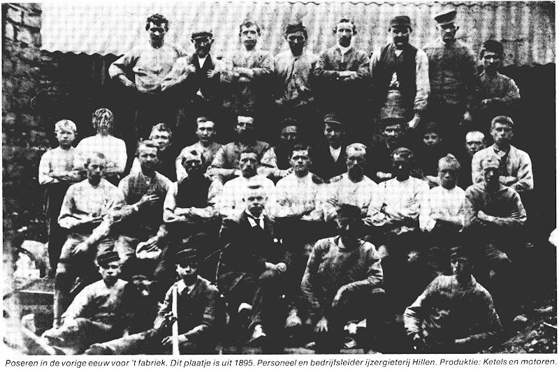
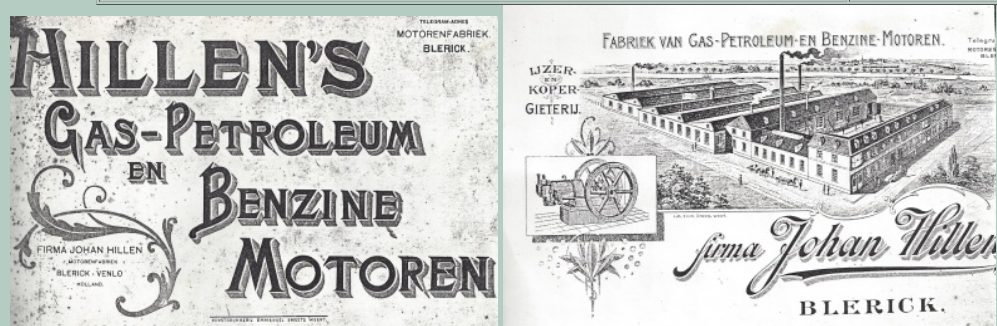

Oprichting: een fabriek voor stoommachines en landbouwwerktuigen
Op 6 september 1877 richtten Johan Hillen en zijn compagnon Penning aan de overkant van de Maas, in Blerick, een kleine machinefabriek op. De Kamer van Koophandel van Venlo noteerde in dat jaar dat het bedrijf werkte met een machine van 15 paardenkracht en zich toelegde op het vervaardigen van nieuwe en het repareren van oude stoommachines en landbouwwerktuigen, en op het maken van schroefbouten en klinknagels. Johan Hillen was op dat moment 56 jaar oud — een tweelingbroer van Alexander Hillen, en zelf zoon van de Blerickse hoefsmid Alardus Hillen.
Het bedrijf veranderde in de decennia die volgden meermaals van naam — Hillen & Penning, J. Hillen & Zonen, Joh. Hillen & Co. — wat suggereert dat de zonen van Johan al vroeg meewerkten in de zaak. In 1884 nam de firma bovendien de allereerste ijzergieterij van Blerick over: die van de families Van Boom en Joiris, die dat jaar ophield te bestaan omdat er geen opvolger meer was.
Groei tot grootste werkgever van Blerick
Binnen zeven jaar groeide het personeelsbestand van 24 naar ongeveer 100 man — een verviervoudiging die de fabriek tot een van de grootste werkgevers van Blerick maakte. Het assortiment breidde zich sterk uit: van landbouwwerktuigen tot complete bruggen, van scheeps- en ketelwerk tot boekenrekken. Vanaf 1884 konden scheeps-, ketel- en bruggenmakers er direct aan de slag.
Een bijzonder detail: rond de eeuwwisseling beschikte Blerick nog niet over elektriciteit. Hillen wekte voor de eigen productie zelf stroom op met een generator — en leverde daarmee zelfs elektriciteit aan de nabijgelegen pastorie, lang voordat het dorp een elektriciteitsnet kreeg.
In 1886 kreeg “de Blerickse aannemer Joh. Hillen” een prestigieuze opdracht: het verschuiven van de bestaande Maasbrug op haar pijlers, zodat er een tweede, parallelle brug bij kon komen. De oorspronkelijke brug (1865) was gebouwd voor het spoorwegverkeer; na de verschuiving diende hij nog uitsluitend als verkeersbrug voor voetgangers en fietsers.

Een fabriek met een eigen karakter
De lokale kranten uit die jaren geven een levendig beeld van het dagelijkse reilen en zeilen bij Hillen. In 1892 sloegen op een huwelijksfeest in de buurt de vreugdeschoten de paarden op hol die een 8.000 kilo wegende, bij Hillen vervaardigde ijzeren brug moesten vervoeren — het gevaarte kwam tegen een woonhuis tot stilstand en liet een deel van de gevel instorten. In 1910 ging de firma failliet en werd het complete bedrijf publiek geveild door de Blerickse notaris Vissers, inclusief het aangrenzende herenhuis, zes burgerhuizen, een landbouwerswoning en ruim drie hectare bouw- en weiland. Drie jaar later, op 19 november 1913, brandden de gieterij en smelterij bovendien volledig af, waardoor vijftig man tijdelijk zonder werk kwamen te zitten.

In 1906 verscheen zelfs een reclamefolder van 40 pagina's voor de ‘Hillen-motor’ — een teken van hoe breed het bedrijf inmiddels adverteerde.
Van vader op zonen, tot het faillissement
Toen Johan Hillen op 11 mei 1895 overleed, zetten zijn zonen Henri (Henri Hubert Hillen, 1852–1914) en Piet de zaak voort. Henri werd directeur en bleef dat tot zijn dood op 23 oktober 1914 — hij overleed dus nog geen jaar na de verwoestende brand van 1913.
Na het faillissement van 1910 werd de zaak nog kort voortgezet als naamloze vennootschap, maar in 1916 kocht de familie Th. Holthuis uit Veendam ‘Joh. Hillen’s IJzergieterij en Machinefabriek’ voor 10.000 gulden.
Bronnen
- Heuijerjans.net (Andreas Heuijerjans), ‘Blerick: De IJzergieterijen Van Boom/Joiris, Hillen en Van den Bergh’ — heuijerjans.blogspot.com/2014/09/blerick-de-ijzergieterijen-van.html
- Nederlands IJzermuseum, ‘Overzicht ijzergieterijen in Nederland 1689–2012’ (Dik Nas)
- Diverse historische krantenberichten via Delpher.nl
- Kamer van Koophandel Limburg, ‘Twee Eeuwen Handel & Nijverheid 1804–2014’